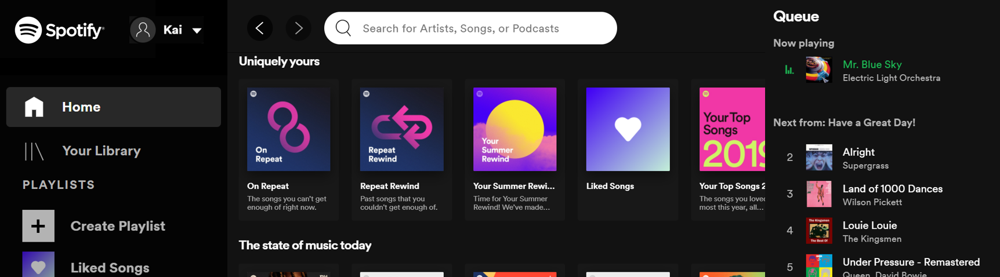
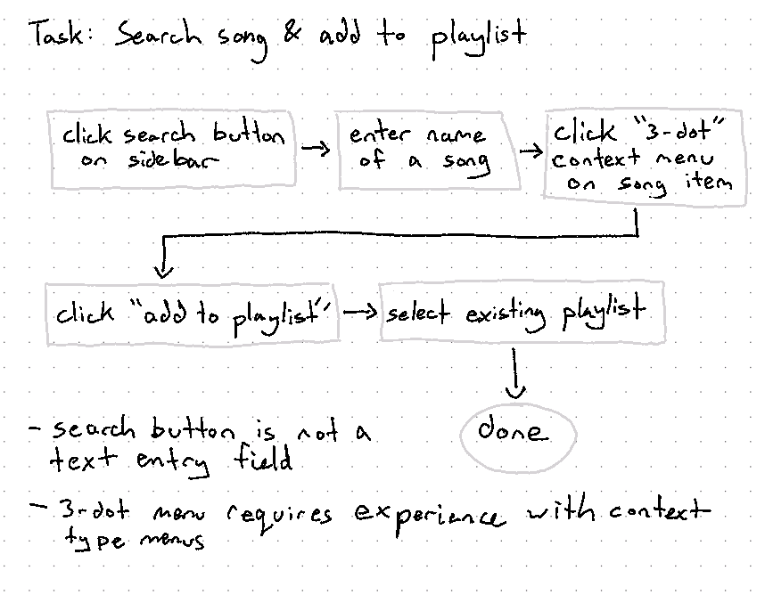
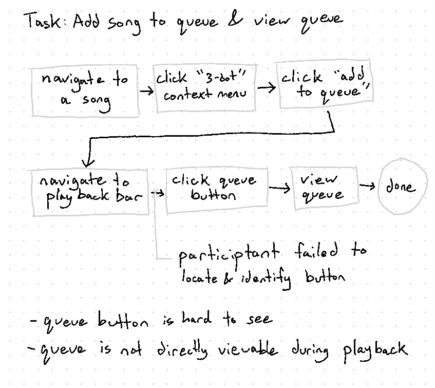
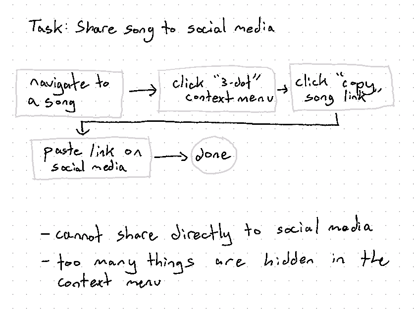
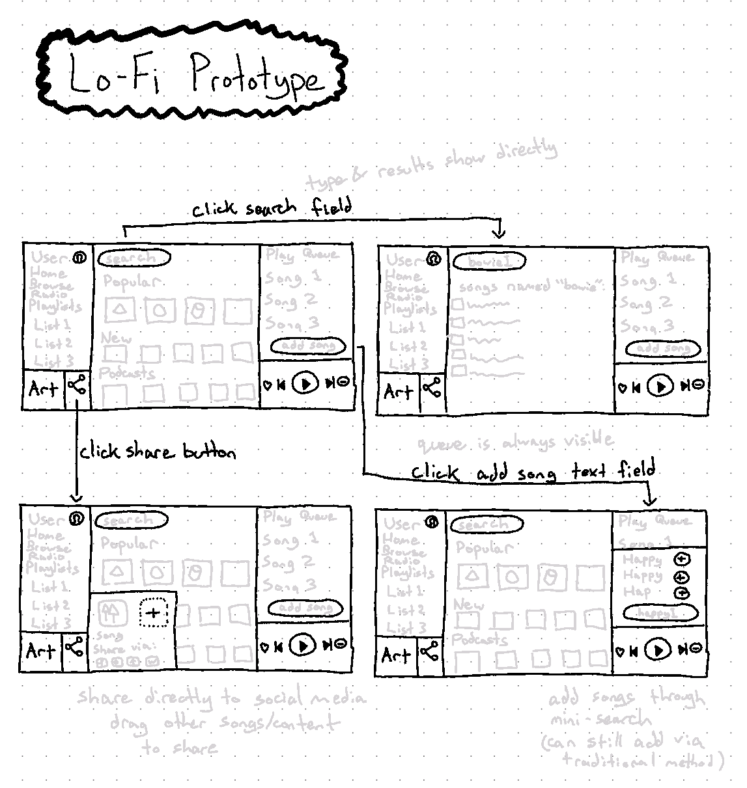

Spotify Redesign
Introduction
I redesigned the Spotify webapp interface through a process of contexual inquiry, building a sequential model, developing a low fidelity prototype, and evaluating the prototype with a participant.
Spotify is a popular music streaming app used by millions of people. While the functionality of their various interfaces are fairly straight-forward in terms of ease of use, there are some features that can be obtuse if the user does not have prior experience with it or have not used the interface in a long time. By using Contextual Inquiry and analysing how others use the interface via an task-driven approach, I can discover the "pain points" in the design of the existing interface.
Contextual Inquiry
Participant
Name: Sara LeeAge: 24
Education Level: Masters Degree
Occupational Field: Education
Sara is representative of the age group that forms a large portion of Spotify’s user base. Because she is not involved with HCI, and not involved in the UX industry, she is a good candidate for this CI.
Tasks
The tasks I have chosen for the Contextual Inquiry are typical tasks that one might perform on Spotify, with slightly more complexity than simple playback of content.
- Find a new song and add to a playlist.
- Add songs to queue and view the queue.
- Share a song to social media.
Video
Sequential Models
Using the CI video, I analyzed the participant’s activity while doing the tasks, and laid it out as sequential models.
  Lo-Fi Prototype
Using ideas I generated by examing the key pain points from the CI, I sketched out a Lo-Fi prototype:
The general idea is to make relevant features more grouped together and visible, so that the user can access them more directly. For example, the queue is now displayed on the main screen, and adding new songs to the queue can be done directly in the queue via a simple search interface. Instead of clicking the search button to access the search screen, the user can search directly from the text box at the top of the interface at all times. Sharing can be accessed by clicking the share button at the bottom corner of the interface, which reminds users of the functionality. By default it shares the currently playing song, but the user can also drag in other songs.
I then took the sketch and made it interactive using PowerPoint. It was easy to add visual elements from the Spotify webapp to help the prototype look more authentic, despite being a lo-fi model.
You can interact with the interface by clicking on "Search", "Share", or "Add Songs to Queue"
Evaluation
I evaluated my prototype with Sara, by asking her to perform the same 3 tasks as before. At the end I asked her to compare her experiences and thoughts on the interface. This prototype was perceived as an improvement by the participant, although she had some initial confusion regarding how to interact with the interface prototype initially when attempting task 2. I believe this was because of her existing experience of doing the same for the CI.